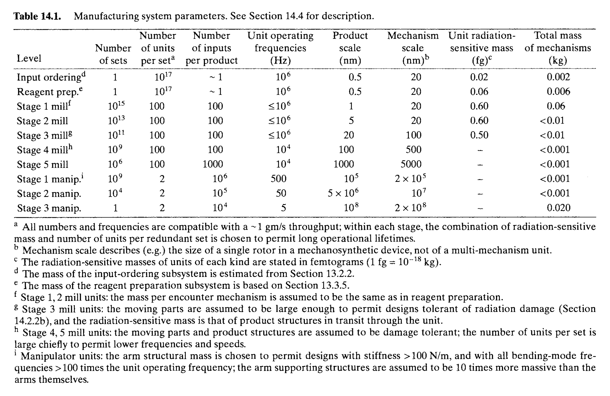

Vibe coded by Lukas M. Süss (aka mechadense) using Anthropic Claude Opus 5.5 (high) – 2026-11-18
Source: K. Eric Drexler, Nanosystems: Molecular Machinery, Manufacturing, and Computation (Wiley, 1992), Chapter 14, Section 14.4 “An exemplar manufacturing-system architecture”, Table 14.1. Read the section online (nanosyste.ms) · Coverage of the book on the APMnT wiki
Chapter 14 of Nanosystems sizes an example productive nanosystem: small feedstock molecules are built up, level by level, into ≈ 1 kg products at ≈ 1 g/s. This page follows that flow through Table 14.1 and checks that each level passes on what the level below delivers.
Work in progress: not yet fully checked by hand. Numbers are from Table 14.1 and the cited sections; mistakes are possible. Corrections welcome – open an issue on GitHub.
What this is about. Chapter 14 of Nanosystems sketches how a desktop-scale molecular manufacturing system could turn a small-molecule feedstock into macroscopic products with atomic precision. Drexler presents it as an exemplar to check the numbers, not as a proposed design. Material flows upward through a series of levels, each building larger parts from many smaller ones (convergent assembly):
The system is sized to turn a feedstock solution into ≈ 1 kg products of ≈ 0.2 m in a cycle time of about an hour (§14.4.1). Table 14.1 gives the number of machines, their speed and size per level, chosen to give about 1 g/s overall. This page checks whether those numbers carry the same flow of material from level to level, and explains the three places where they seem not to.
* products per operation: 1 for mills (one product finished, assumed), 1 / inputs for manipulators (one input placed). Mass flow ṁ = ρ · V̇ with ρ = 1000 kg/m³ = 10⁻²⁴ kg/nm³ (§14.4.3), so 10²¹ nm³/s = 1 g/s. Each log takes the quantity divided by its unit, so the sum is a pure number.
Multiplication becomes stacking in log₁₀. A log needs a unitless argument, so quantities with units are divided by their unit (Hz, nm³); the units multiply the same way, Hz · nm³ = nm³/s. Segments above 0 multiply, below 0 divide. ◆ = net log₁₀ volume flow [nm³/s]; ▸ = subtotal log₁₀ cycles/s. Dashed line at 21 = 10²¹ nm³/s = 1 cm³/s = 1 g/s at 1000 kg/m³: a continuous chain gives a flat line of ◆ there. Pre-stages: log s³ is replaced by log of the volume per input chosen in Oddity 2 (not a table value). Follows the mode buttons and the switches in the oddity cards.
Products/s × (product scale)³ × 1000 kg/m³, the handling density §14.4.3 uses for its 0.001 kg/s. Pre-stages: volume per input as chosen in Oddity 2 (not a table value). Dashed line: the ~1 g/s design throughput of footnote a.
Stage 1–3 mills list ≤10⁶ Hz; the chain only fits at 10⁴ Hz per unit, which §14.3.3 confirms.
Finding. With ≤10⁶ Hz taken at its maximum, stages 1–3 would need 100× more input than reagent prep delivers, and make 100× more than stage 4 can take (≈ 80–125 g/s vs ≈ 1 g/s everywhere else).
Resolution. Section 14.3.3 gives the operating value: the early mill sets have an overall operating frequency of about 10⁶ s⁻¹, shared among the 100 units of each set (ups = 100), so about 10⁴ s⁻¹ per unit. That lies within the table’s ≤10⁶, and with it every boundary matches. The table entry is a valid upper limit, just not the value that fits the throughput. The book does not say why the table gives the limit rather than the operating value. Two more passages fit 10⁴ Hz: §13.3.6 works out a mean time to failure for “a single device working at 10⁴ operations per second”, and §14.4.3 states that with all components at their stated frequencies the throughput would be 0.001 kg/s. A chain runs at the pace of its slowest level, so that holds even if stages 1–3 could run up to 10⁶ Hz. (§14.3.3 online)
Stage 1 takes 100 inputs where the size step suggests 8 – it counts transferred atoms, not volume.
Finding. Every other step roughly follows inputs/product ≈ (scale step)³. Stage 1 does not, and the pre-stages taken as (0.5 nm)³ blocks would carry ≈ 12.5 g/s, about 12× too much.
Resolution. The 0.5 nm “scale” is the size of what is handled: a reactive group held on a carrier or tool tip via adapters. What is actually deposited is about one atom or a small group. A 1 nm³ stage-1 product at the book’s 1000 kg/m³ weighs ≈ 600 u (≈ 50 C atoms’ worth; solid diamond would hold ≈ 176 C atoms), so ≈ 100 transfers of about one atom each fits. As a check, 10²³ transfers/s × ≈ 6 u ≈ 1 g/s – the same flow as every higher stage. So stage 1 counts atoms, not volume.
The table’s pre-stage and mill masses give 5× the volume §14.4.4 states – unresolved.
Finding. §14.4.4 estimates the volume of input ordering, reagent preparation and the mill stages from the tabulated masses at a mean density of 100 kg/m³ and gets ≈ 1.8 × 10⁻⁴ m³. Summing the table’s masses for those levels gives ≤ 0.09 kg, i.e. ≤ 9 × 10⁻⁴ m³ – five times more.
Unresolved. It would fit if stage 1’s 0.06 kg were 0.006 kg and the “<0.01” entries were ≈ 0.002 kg (sum ≈ 0.018 kg), but that is a guess. The overall mass check is consistent: the table sums to ≤ 0.112 kg, matching §14.4.4’s “< 0.12 kg”. The layer-stack section below lets you switch between both volumes.

Light boxes = table columns, darker = derived. Color family follows the chain: rate (blue), size (orange), continuity (green).
Each quantity in its own unit on one log₁₀ axis. sets, ups, f, product scale, cycles/s and volume flow are in the stack-up chart above. Hover a column for values; hollow markers = upper bound (“<” in the table).
How long each level keeps working before radiation damage stops it. A unit is lost when hit; a set works while at least one of its units works; a level works while all its sets work (Eq. 14.1, §14.3.3). Lifetime here = time until the level is still working with probability 1/e ≈ 37 %. Dashed lines: 10 and 100 years.
From the book (§14.3.3, §14.4.5). Units with ≤ 2 fg of radiation-sensitive mass have about a 1 % chance of failing within ten years. Radiation mainly threatens mill stages 1–3: earlier stages are massively redundant, later stages are built from parts large enough to tolerate damage. For stages 1–3 the text calculates with ups = 10 (Nunit) and sets ≈ 10¹⁵ (Nset), so units = sets · ups ≈ 10¹⁶, and finds they almost surely survive ten years; ups = 20 gives over a century. (§14.4 online)
The damage model (§6.6.2–6.6.3, §13.3.6c). A unit survives a dose D [rad] with probability Pfunc ≈ exp(−10¹⁵ · D · m), m = radiation-sensitive mass in kg. The rate of ≈ 10¹⁵ inactivating hits per kg per rad is taken from enzyme inactivation data. At a background of 0.5 rad/year, m = 2 fg gives 1 % in ten years, matching the figure above. For parts much larger than ≈ 100 nm the book switches to an m2/3 law (Eq. 6.54); the masses here are below that.
Conservative: one hit = one failed unit. The model assumes failure after a single inactivating hit (Fig. 6.13), and fail-stop units stop rather than make faulty products (§13.3.6b). The book argues the 10¹⁵ rate is unlikely to be much too low: diamondoid parts heal most excitations, though their tight design tolerates fewer changes than proteins do. So the lifetimes shown are more likely too short than too long.
Mismatch with the table. Table 14.1 lists ups = 100 for stages 1–3, not 10. With ups = 100 the lifetime is much longer: ≈ 1200 years instead of ≈ 30 for stage 1 (book’s worst-case failure rate). The 100 are also what splits the ≈ 10⁶ s⁻¹ set frequency into 10⁴ s⁻¹ per unit. The text also uses stage 1’s 10¹⁵ sets for all three stages, the worst case.
The book gives volumes but no layout (§14.4.1 sums workspace volumes “without describing a particular three-dimensional layout”). Stacking the levels as flat layers of equal footprint is our construction. Thickness = volume ÷ footprint area.
Volumes used. Pre-stages and mills: “total mass of mechanisms” at a mean density of 100 kg/m³ (§14.4.4); “<” entries at their bound. Manipulator stages: their volume is set by the workspace, not by mechanism mass. §14.4.4 takes ≈ 0.01 m³ for a 1 kg product, ≈ 0.03 m³ for the three stages, × 1.66 for packing and cooling ≈ 0.05 m³. Each stage holds a time-average product mass of ≈ 0.5 kg (§14.4.3), so it is split equally here, ≈ 0.017 m³ per stage.
Example, input ordering at A = (0.2 m)²: t = 0.002 kg ÷ (100 kg/m³ · 0.04 m²) = 5 × 10⁻⁴ m = 0.5 mm.
Compared with the video. The animation “Productive Nanosystems: From Molecules to Superproducts” (Burch & Drexler; notes on the APMnT wiki) shows the productive nanosystem as stacked layers, thickest at the bottom with the smallest machinery and thinner layers above. Looking only at the nanoscale part (the blue mill layers here), the book’s numbers give the same picture: stage 1 mill is the thickest layer, and the layers above get thinner. The video’s mill layers look much like these, but it has only one mill stage, then switches to a manipulator stage while still at the nanoscale, followed by a streaming assembly stage. The macro-scale manipulator stages that dominate the total height here (products of 100 µm to 0.1 m in enclosed workspaces) are mostly optional and mainly useful for recycling and recomposition at the macro scale; §14.4.4 also names the alternative of products “constructed and extruded incrementally”.
Everything below is an assumption or interpretation made for this page. The column values, the stage grouping and the §14.3.3 frequency resolution are from the book.
Assumptions in the math
Interpretations
Nanosystems is first and foremost a work of exploratory engineering (EE): using well-established physics and conservative engineering methods to find rough but reliable lower bounds on what physical law permits. Like a mathematical existence proof, such a result says what is possible – not how to get there from today’s technology, how fast, which route wins, or whether it pays.
Within that frame, Table 14.1 is the book’s central conclusion: a complete productive nanosystem, from feedstock molecules to ≈ 1 kg products, sized with numbers that are meant to hold together. The book’s later discussion of development pathways lies outside EE, so it is less timeless and more prone to ageing. Checking the table’s internal consistency is checking the book’s core result.
More: Exploratory engineering and Recordings of talks of Eric Drexler (APMnT wiki).